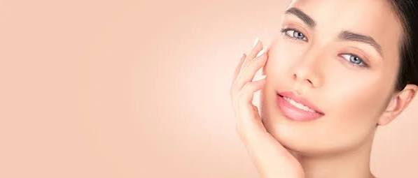
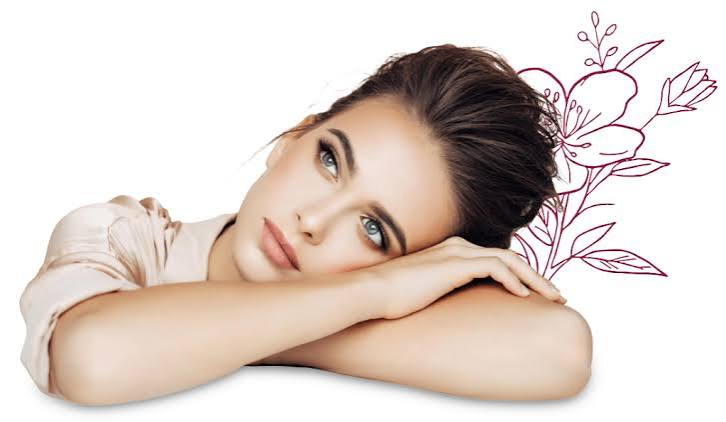
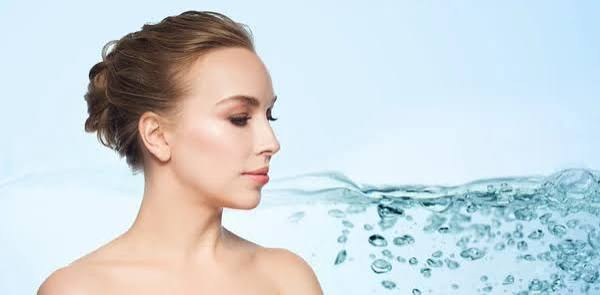
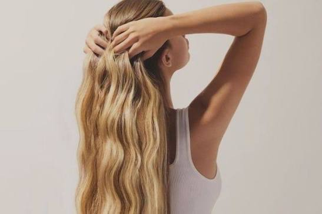

La belleza natural es aquella que no necesita muchos productos o cambios. Cada persona tiene características únicas que la hacen especial.

Cuidar nuestra piel es importante para mantenerla saludable. Lavarnos la cara, usar protector solar y tomar suficiente agua son hábitos sencillos que ayudan.

La belleza no solo depende de la apariencia. Ser amable, respetuoso y tener buenos sentimientos también hace que una persona sea bella.

La moda permite expresar nuestra personalidad mediante la ropa, los colores y los accesorios. Cada persona puede encontrar un estilo con el que se sienta cómoda.

No existe un solo tipo de belleza. Las diferentes formas, colores, estilos y características de las personas hacen que la belleza sea diversa y única.